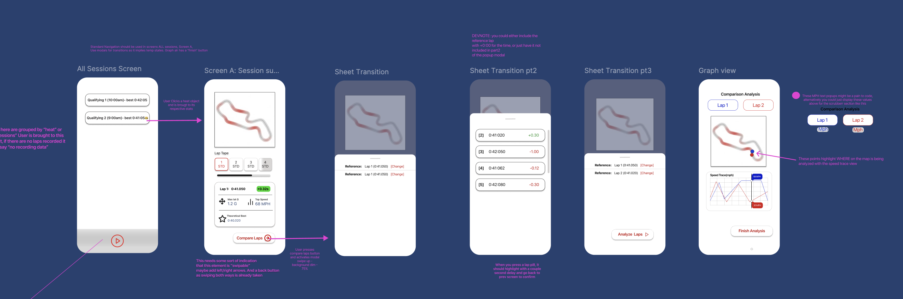

Kenji FAhselt.
User-Centric Software Engineer
I am a CS student who is interested in the intersection of robust software development, UX design, and Human-Computer Interaction. I enjoy bridging complex technical execution with human-centric design to build seamless, engaging, and highly functional user experiences.
Work Experience
Research & Development Intern
Summer 2025 - Winter 2026Apexiel Inc.
- Led the end-to-end development of an iOS telemetry analysis application as the sole Software Engineer, enabling the startup to hit MVP launch deadlines for early user testing.
- Partnered with the CEO to translate business requirements into a technical roadmap for the MVP launch.
- Engineered core data-tracking features (turn detection, driving lines) to translate complex sensor data into actionable insights for drivers in high-speed environments.
Undergraduate Research Assistant
Spring - Summer 2025University of Washington Bothell
- Solo Developed the navigation simulation layer for an autonomous ATV project, collaborating with Mechanical and Electrical Engineers to translate physical vehicle dynamics into working navigation code.
- Simulated high-fidelity sensor environments(LIDAR) in software, eliminating the need for expensive physical hardware testing and accelerating the project timeline.
General Officer
PresentGoogle Developer Student Clubs (GDSC)
Projects
Real-Time Gesture Recognition
Python, OpenCV, Mediapipe, Scikit-Learn, NumPy
Engineered a Real-Time Gesture Recognition engine with MediaPipe, Jupyter, and Scikit, allows user to train and record their own gestures with a modular strategy pattern
View SourceFinancial Intelligence Agent
Python, LangChain, Ollama, ChromaDB
Developed a financial agent to parse and analyze financial data using ollama, RAG and vector databases.
View SourceGreenLog iOS
Swift, SwiftUI
For UWBHACKS 2025, Built a a carbon emissons tracking IOS app, used coremotion/location for vehicle tracking, avfoundation for barcode scanning, and UIkit/graphs for visualization
View SourceRX - Rallycross Telemetry iOS App mockup
Figma, Miro
Created a high fidelity IOS mockup for a Rallycross Telemetry iOS App

Education
University of Washington Bothell
Expected June 2027B.S. in Computer Science & Software Engineering
Minor in Data Science